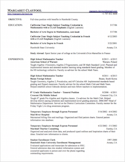

Who am I?
I was born in Eureka, California and attended College of the Redwoods and Humboldt State University. I've spent the last ten years teaching Math, first in California and then internationally. I spent two years in Busan, South Korea and two years in Warsaw, Poland. Although I loved living overseas, I needed to return home to northern California for family reasons. For most of the last school year I taught 7th and 8th grade math at South Bay Charter School. However, due to declining enrollment my hours were cut. I love teaching, but am interested in moving in another direction with my future employment. I'd be a great fit for tech support, I'd make an excellent secretary, and I even flip a mean burger :)
What are my strengths?
Technology: We live in a fascinating time, and new inventions and discoveries are constantly being made that change the way we live, in ways both trivial and profound. I'm deeply excited to learn the next cool trick or tool that can make my life simpler or more efficient, and I love sharing my discoveries with those around me. I regularly assist my family and coworkers with their computers and devices, and had a blast teaching an Introduction to Programming class last trimester.
Learning: I love to learn new things and new skills. I know it's something of a cliché for an educator to talk about being a lifelong learner, but I feel very strongly that part of the human condition is the eternal quest to learn and grow.
Music and Theatre: I've been involved in music and theatre for many years, which has enriched my life tremendously.
More Details
Please take a look at my resume, letters of recommendation, and other details. If you think I might be a good fit for your organization, I'd love to discuss it with you.
|  |

|

|
|

|

|
| Resume | Letters of Reference | Diplomas and Teaching Certifications |
Official Transcript |
Background Check |
Email Me :) |